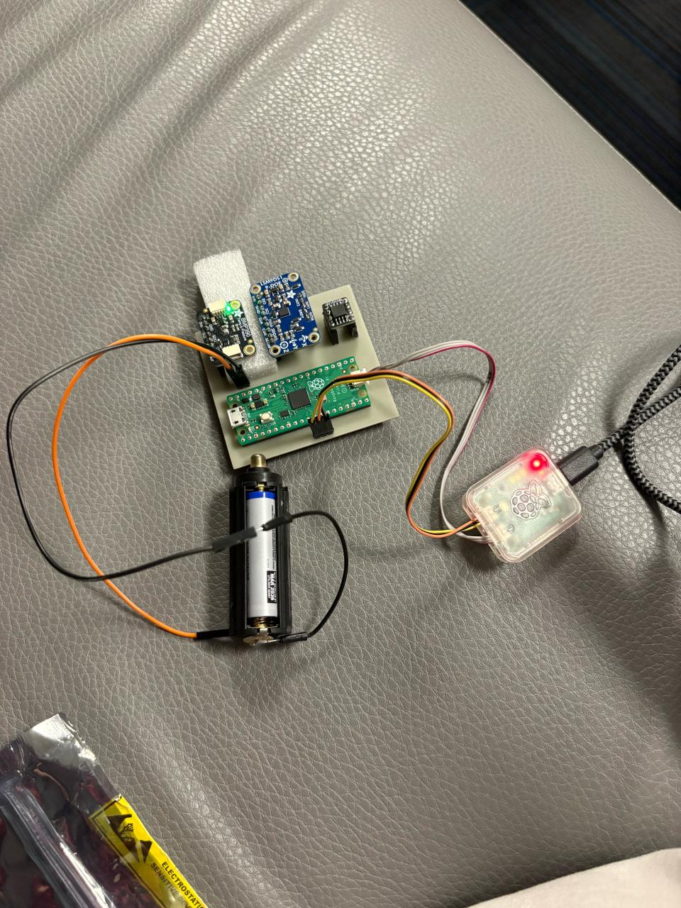
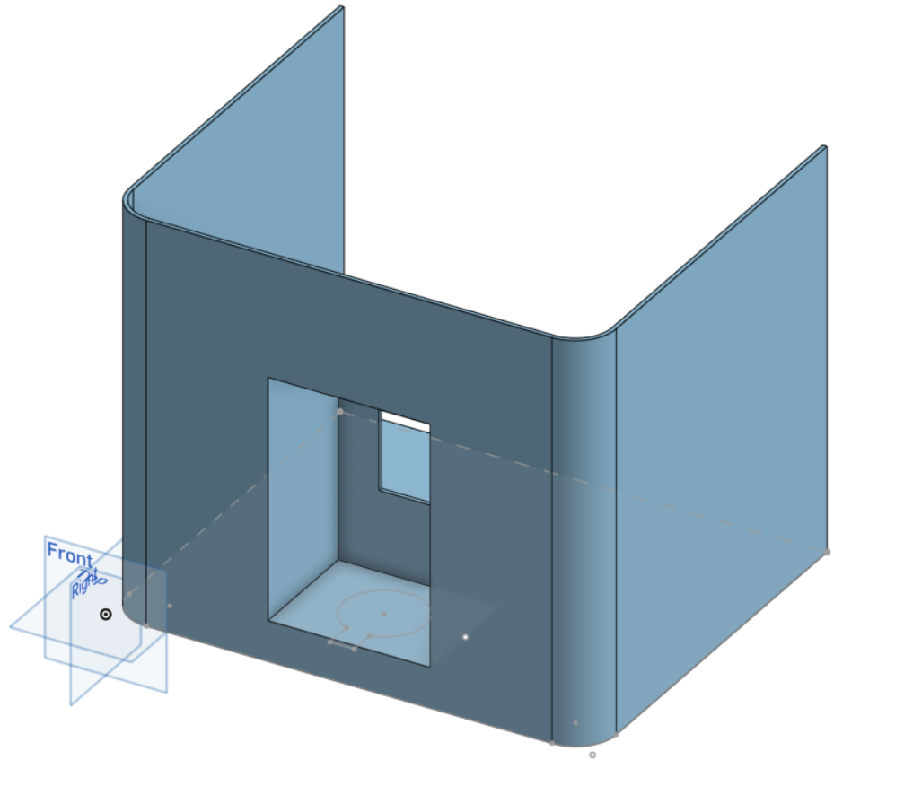
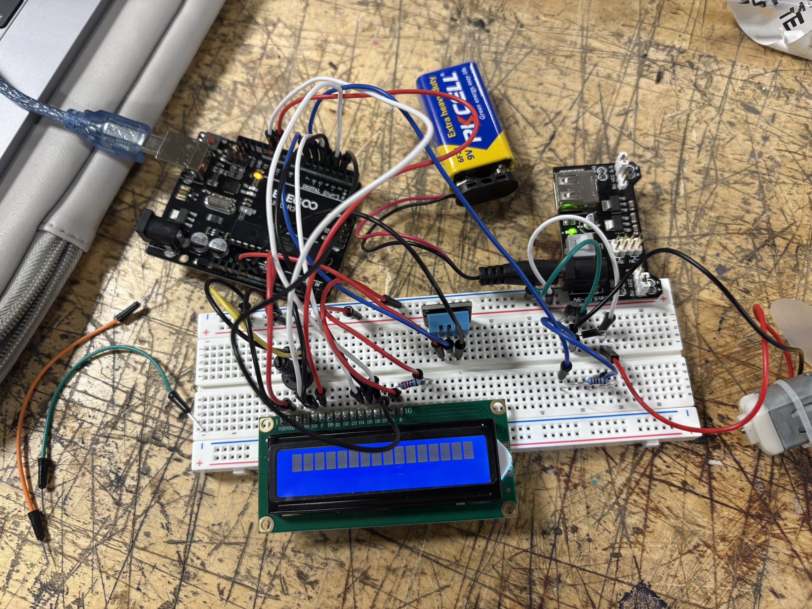

hi, I'm
Margeaux Corrigan
Electrical engineering student at Brown — I build embedded systems from the register level up.
I work at the intersection of hardware and software: writing bare-metal Ada firmware for STM32 microcontrollers at AdaCore, leading avionics on Brown Rocketry's IREC-accepted rocket, and joining Brown's Interactive 3D Vision & Learning Lab this summer to work on multi-camera capture systems in C++. I care about code that maps cleanly to the silicon it runs on — no HAL abstractions hiding the interesting parts.
Projects

Rocket Payload Sensor System
CompleteBare-metal Ada firmware for an RP2040-based multi-sensor rocket payload, mentored by AdaCore. Deployed on a live high-power launch — firmware logged continuously under real G-loads. Integrated BMP390 and LSM9DS1 over I2C at 100 Hz; implemented W25Q128 SPI flash for onboard data logging.
View on GitHubBare-Metal Driver Stack in C
In ProgressBare-metal peripheral and device drivers in C for ARM Cortex-M targets — I2C, UART, and GPIO bus drivers, SysTick-based timing, and device drivers for the LSM9DS1 IMU and BMP390 barometer built on top. Hardware abstraction layer separates register definitions from driver logic, with consistent error handling and a unified API across the stack. Written without HAL libraries — every register access is explicit. Target hardware is the custom sensor board below.
Coming to GitHubSensor Board
PlannedCustom PCB designed in KiCad — consolidates the rocket payload's sensor breakouts into a unified board. LSM9DS1 IMU and BMP390 barometer integrated on a single design with shared I2C bus, decoupling, and cleaned-up routing. Built as the target hardware for the bare-metal driver stack, closing the loop from peripheral driver to schematic to layout.
Coming to GitHub
Boba Machine
In ProgressESP32-driven boba dispenser: the firmware manages a servo control loop that holds each valve open precisely long enough to dispense the correct ingredient volume. Students order via a Wi-Fi web interface and rate their drink 1–5; a gradient descent optimizer runs server-side, learning from ratings to tune ingredient ratios over time.
View on GitHub
Temperature-Controlled Fan
CompleteEmbedded system that reads a temperature sensor and drives a fan and LED display via Arduino firmware. Built and debugged the full hardware circuit integrating sensor, display module, and microcontroller control logic.
No repoExperience
IVL Lab, Brown University — Paid Researcher
Investigating multi-camera capture and calibration systems using C++ and embedded hardware, advised by Prof. Srinath Sridhar. Funded by the Brown UTRA Research Award.
AdaCore — Technical Mentorship
Developing bare-metal Ada firmware for STM32G431 at the register level (RM0440/SVD), without HAL abstraction. Built working toolchain from scratch (Alire, OpenOCD, CMSIS-DAP); parsed ARM SVD/XML to map peripheral registers into Ada drivers.
Brown Rocketry — Lead Avionics Engineer
Led all avionics development for the payload that earned Brown Rocketry's first-ever IREC acceptance. Designed the full electrical architecture, wiring diagrams, and power distribution; performed FEA on avionics bay components; secured annual industry sponsorship.
Brown Space Engineering — Antenna Team
Leading antenna specification for the communications subsystem, including Nitinol dipole and copper patch designs. Establishing feed architecture, impedance matching strategy, and EMC constraints.
Persistence Labs — Strategy Intern
Facilitated beta testing across 10+ iterations with high school control groups; synthesized findings into reports presented to the founder/CEO to guide UI and product decisions.
Project Amplify — Founder & Director
Founded a summer AI literacy program across 3+ school districts. Designed and taught curriculum from scratch — students trained image recognition models in Python using Pandas and NumPy. Awarded the Taco Bell Ambition Accelerator Grant.
Contact
Always happy to talk embedded systems, rockets, or weird side projects.